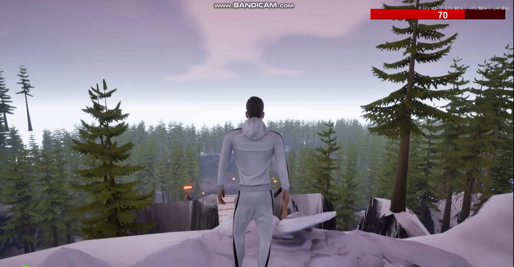
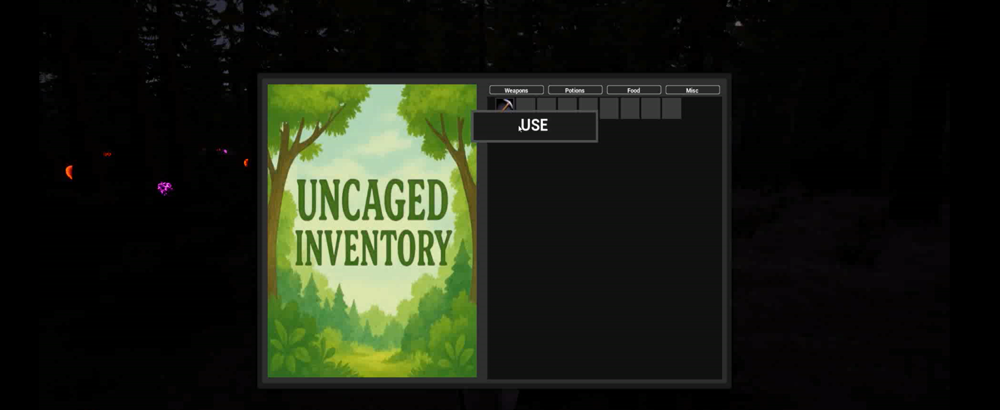
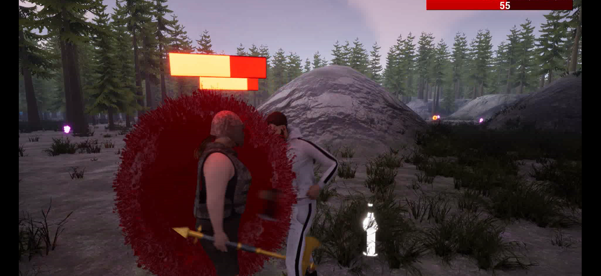
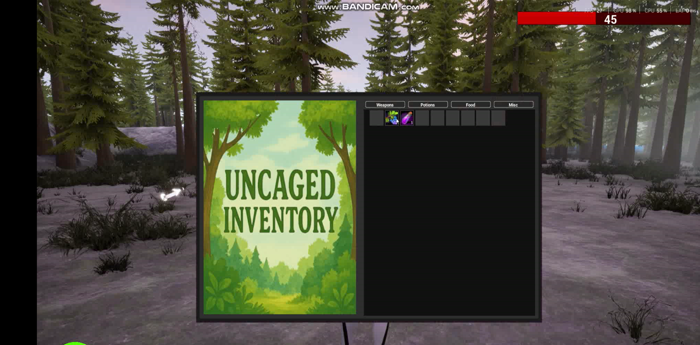

UnCaged: The Wild After Party
Survive the fog. A single-player Unreal Engine 5 RPG prototype about escaping a dense forest after a night out goes wrong.
Category: Game Projects | Role: Solo Developer | View Repo
About the Game
UnCaged: The Wild After Party is a third-person RPG prototype built in Unreal Engine 5.4.4. The player controls Ricky, who wakes up lost in a dense foggy forest after a party and must follow clues, collect useful resources, avoid danger, defeat the tribal leader, recover a phone, and escape.
The game combines exploration, survival resources, third-person combat, enemy AI, ambient forest presentation, UI feedback, and a final objective structure. The mood was inspired by wet, misty forest environments and grounded third-person action.
My Contribution
I built the prototype using Unreal Engine Blueprints. I implemented the third-person character controller, camera spring arm, walking, sprinting, crouching, jumping, stamina behaviour, combat feedback, inventory flow, UI screens, enemy health bars, pickup guidance, and final escape logic.
I also handled the level design pass. I started with hand-drawn sketches, then translated the map into Unreal using Landscape mode, sculpting tools, Landmass brushes, and spline-based shaping. The rope bridge forced me to redesign parts of the terrain so traversal, height, and collision could work properly.
Technical Work
- Character animation setup using Mixamo assets, blend spaces, and a stable attack montage.
- Ragdoll physics for defeated enemies to improve combat impact.
- Rope bridge prototype using physics constraints, anchored planks, and rotation limits.
- NavMesh-based enemy movement with patrol paths, chase behaviour, strafing, and return-to-patrol logic.
- Boss defeat flow where the phone drop triggers the ending.
- Niagara effects for combat hit feedback and sprint dust.
- Fog, lighting, and ambient sound design to support the early-morning forest atmosphere.
- Inventory categories for food, weapons, and miscellaneous items.
- Main menu, options, pause menu, death screen, end menu, health bar, stamina bar, and enemy health UI.
Optimisation
I treated performance as part of the design. The Unreal water pond preset caused a major frame drop, so I replaced it with a custom water material on a simple cylinder surface. I also reduced unnecessary shadow cost in the fog-heavy scene and used Unreal HLOD support to keep the map smoother while preserving the atmosphere.
Skills Used




